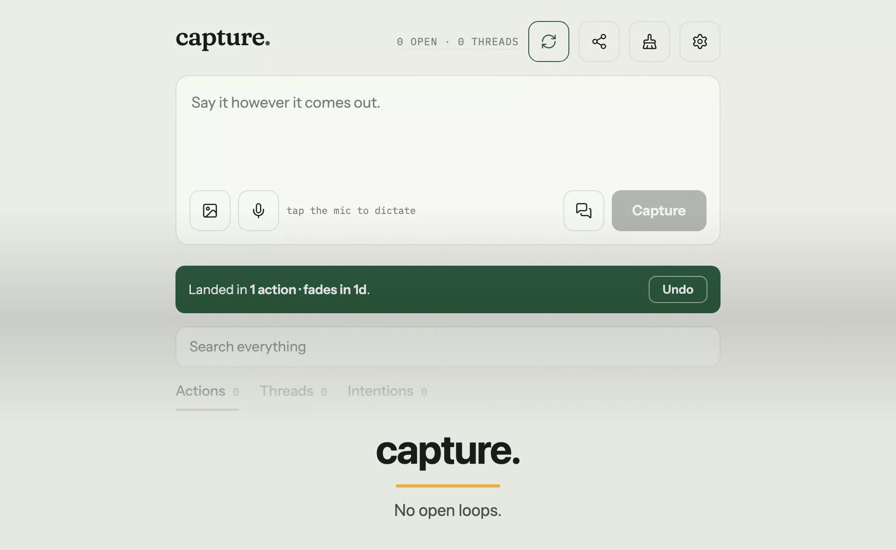
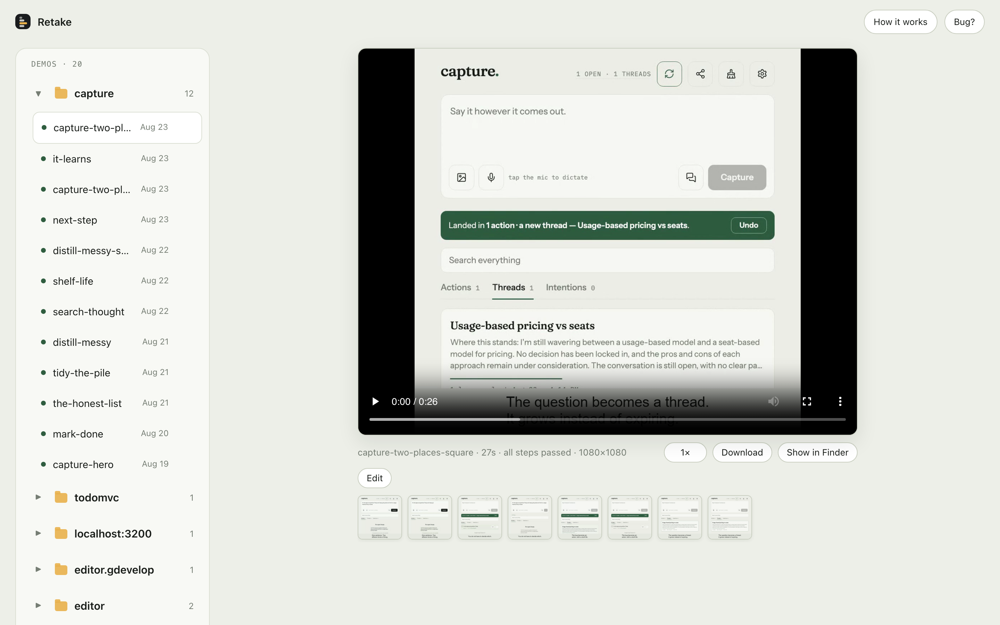
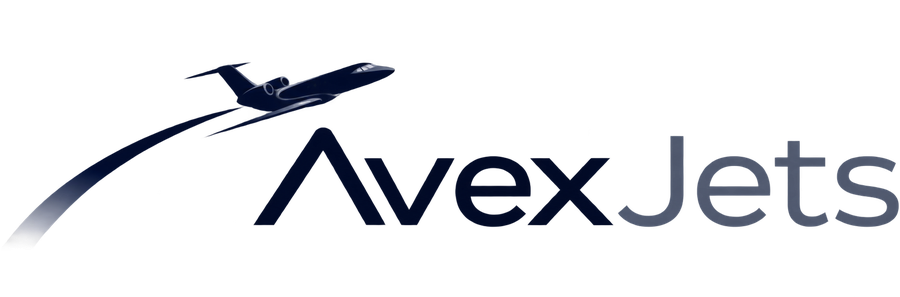
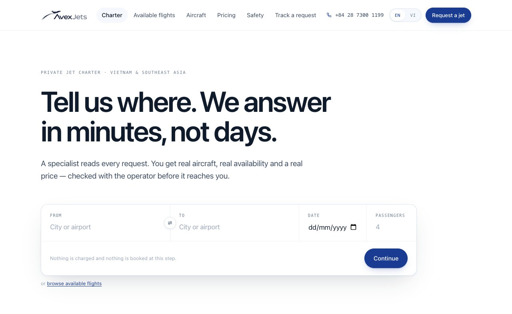
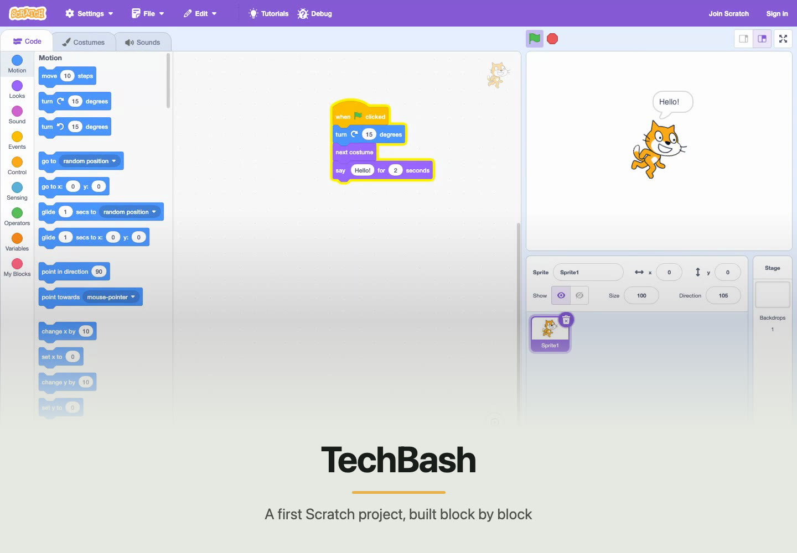

capture.
Five launch videos were drafted, corrected, and recut in one afternoon.

A reusable demo your coding agent records
Describe the walkthrough once. Your agent records the real app, then reruns the same flow after the UI changes.
Retake opens a private library at localhost:4310. Each demo keeps its MP4, stills, and proof log together in one output folder.

When the product changes, the agent reruns the same flow instead of opening a screen recorder.
Retake was built while recording these workflows, not as a landing-page concept.
Five launch videos were drafted, corrected, and recut in one afternoon.


One repeatable flow replaced a twenty-minute live walkthrough across three client portals.

The same file can repeat a real Scratch lesson when the lesson changes.

I built Retake for my own launches and client walkthroughs, and I use it most days. The three products above are the proof so far.
Paste this inside your app project. The agent handles setup, recording, and the local review link.
Set up Retake from https://github.com/glebbogachev00/retake in this project. Ask me for the app URL and the exact flow to show. Dry-run it, record a preview, start the Retake UI, and give me its localhost link. Tell me where the finished MP4 is. Wait for my review, then update the demo from my corrections and rerun it. Do not deploy, commit, or ask me to paste secrets into chat.
Or install it yourself:
npm install -g retake-demos mkdir demos && cd demos && retake install